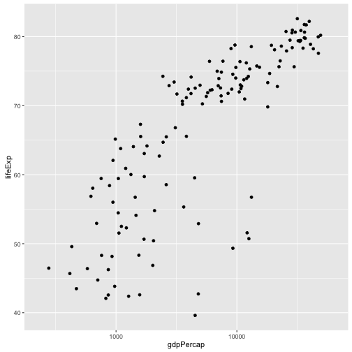
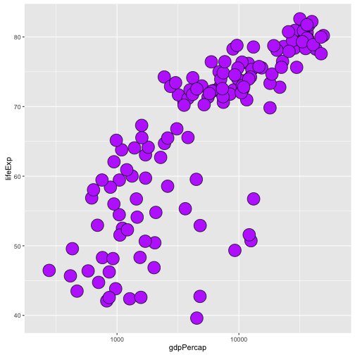
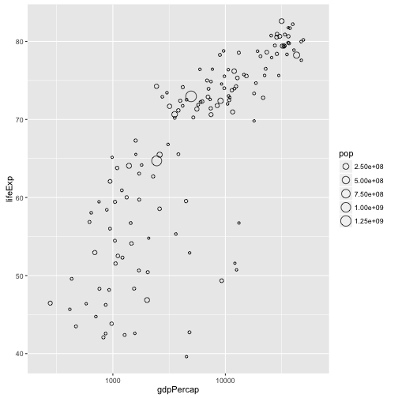
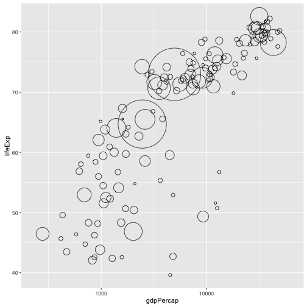
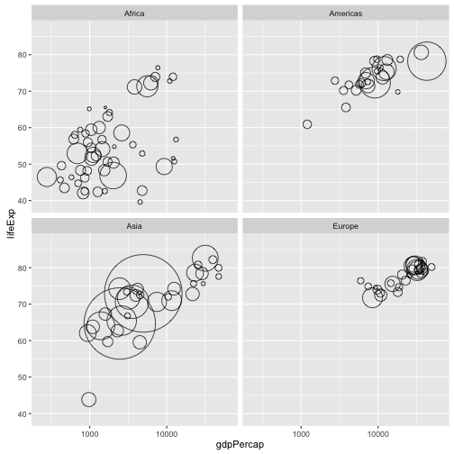
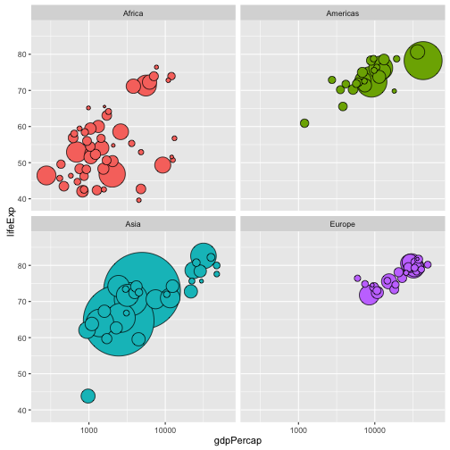
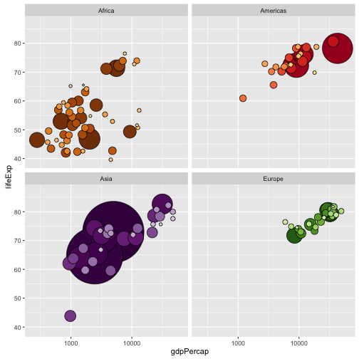

데이터 과학
ggplot2 색상 제어
gapminder 데이터 준비1
국가가 2개만 포함된 오세아니아를 제외한 gapminder 데이터를 불러온다.
인구수에 기반해서 국가 요인을 정렬하고 나서 데이터도 정렬한다. 이유는 아래 거품그림에서 큰 국가가 작은 국가를 가리는 것을 방지하기 위함이다. 슬프게도, 데이터 행의 순서가 시각적 산출물에 영향을 미치는 사례다. 하지만, ggplot2는 lattice 혹은 기본 그래픽 시스템보다 이런 것에 덜 영향을 받는다.
2015-10-19: GitHub에서 가져온 ggplot2 버젼 1.0.1.9003 을 사용한다. dev 개발버젼이 CRAN 저장소 버젼보다 변경사항이 많이 반영되어 있다!
library(ggplot2)
library(gapminder)
suppressPackageStartupMessages(library(dplyr))Warning: package 'dplyr' was built under R version 3.2.5
jdat <- gapminder %>%
filter(continent != "Oceania") %>%
droplevels() %>%
mutate(country = reorder(country, -1 * pop)) %>%
arrange(year, country) 점에 대한 크기와 색상 제어
ggplot2를 사용해서 전통적 gapminder 거품그림을 생성해 나간다. 기어가고 나서, 걷고, 마지막으로 뛴다.
먼저, 년도 하나를 선정해서 간단한 산점도를 생성한다.
j_year <- 2007
q <-
jdat %>%
filter(year == j_year) %>%
ggplot(aes(x = gdpPercap, y = lifeExp)) +
scale_x_log10(limits = c(230, 63000))
q + geom_point()
제도되는 기호, 크기, 색상을 제어한다. 다소 불쾌한 설정을 사용해서, 성공과 실패를 확실히 명확히 한다. 멎진 색상체계를 적용하는데 정교한 조작을 할 시점이 지금은 아니다. 배짱을 가져라!
## 기호에 대한 크기와 색상을 채우는 것을 제어할 수 있는가? 그렇다!
q + geom_point(pch = 21, size = 8, fill = I("darkorchid1"))
원크기 = 인구수
원크기로 인구수를 반영하고자 한다. 반지름을 바로 제어할 수 있기 때문에, 국가별 인구에서 원의 크기를 결정하도록 관계를 \(면적 = \pi r^2\)으로 설정한다. 첫번째 시도에서 일부 미비점이 발견되었다: 원의 크기가 너무 작았고, 크기별 범례는 원하던 것이 아니다. 두번째 시도에서, show_guide = FALSE 선택옵션 설정으로 범례를 숨겼고, \(\sqrt(pop / \pi)\) 로 원크기를 매핑해서 명시적으로 규모에 대한 범위를 설정해서 원의 크기를 증가시켰다.
## ggplot2 ALERT: size now means size, not radius!
q + geom_point(aes(size = pop), pch = 21)
(r <- q +
geom_point(aes(size = pop), pch = 21, show.legend = FALSE) +
scale_size_continuous(range=c(1,40)))
요인으로 결정된 색상으로 원을 채워넣는다.
aes() 함수를 사용해서 요인을 색상으로 매핑한다. 우선, continent 요인과 자동 색상조합에 맞춰 사용한다. 대륙별 패싯(facet)을 사용한다. 패싯을 사용하는 이유는 맞춤형 색상조합을 사용하면서 진도상황을 점검해 나가는데 도움이 된다. 가령 유럽에 있는 모든 국가가 녹색 색조를 띄기 때문에, 만약 대륙 패싯에 다양한 색상의 원이 있다면, 뭔가 잘못된 것을 인지할 수 있게 된다.
(r <- r + facet_wrap(~ continent) + ylim(c(39, 87)))
r + aes(fill = continent)
국가별 생상조합을 설정한다.
gapminder 팩키지에는 대륙과 각 국가별 색상 팔레트가 따라온다. 예를 들어, 국가별 색상조합을 클릭한다.
{kind=link}
str(country_colors) Named chr [1:142] "#7F3B08" "#833D07" "#873F07" "#8B4107" ...
- attr(*, "names")= chr [1:142] "Nigeria" "Egypt" "Ethiopia" "Congo, Dem. Rep." ...
head(country_colors) Nigeria Egypt Ethiopia Congo, Dem. Rep.
"#7F3B08" "#833D07" "#873F07" "#8B4107"
South Africa Sudan
"#8F4407" "#934607"
country_colors 순서가 알파벳 순이 아니다. 국가가 실제로 대륙내 크기로 정렬되어 있어, 색상조합이 생성된 로직을 반영하고 있다. 이상적으로, 실제에서는 항상 그렇지는 않지만, 분석이 행순서에 의존하면 안된다.
ggplot2에 사용될 색상조합을 준비한다.
그래픽 문법(Grammar of Graphics)에서, scale 함수가 데이터 변수에서 aes 미학에 대한 매핑을 제어한다. 지금까지, 자동으로 ggplot2가 색상 / 채우기 scale 이 결정되도록 내버려 두었다. 하지만, 맞춤형 색상조합을 사용하려면, country 요인이 geom_point에 색상을 채우는데 매핑이 되도록 제어한다.
scale_fill_manual 함수를 사용한다. 이산형 척도를 맞춤형으로 제어하는데 사용되는 함수 가족 중 구성원이다. 핵심 인자는 value =으로 미학값 벡터로 이번 경우에 색상을 채워넣는다. 벡터가 명칭을 갖게되면, 매핑과정에서 참고된다. 이런 기능이 믿을 수 없을 정도로 유용하다! country_colors 가 왜 정확하게 작업을 수행하는 이유다. 이를 통해 country 요인 수준에 대한 순서, 데이터 행 순서, 혹은 정확하게 어떤 국가가 제도되어야 하는지에 관한 걱정을 덜어준다.
ggplot2 거품그림을 생성한다.
이 지점에 오면 사기성이 있을 정도로 단순해 진다. 다른 많은 것과 마찬가지로, 앞선 모든 것을 해결하면, 정말 쉽다. 마지막으로 추가할 최종 비트 두개는 aes()를 사용해서 국가가 색상에 매칭되게 하고, scale_fill_manual()을 사용해서 맞춤형 색상조합을 명세한다.
r + aes(fill = country) + scale_fill_manual(values = country_colors)
한곳에 모두 모아보자.
제도를 완성하는 전체 코드는 다음과 같다.
j_year <- 2007
jdat %>%
filter(year == j_year) %>%
ggplot(aes(x = gdpPercap, y = lifeExp, fill = country)) +
scale_fill_manual(values = country_colors) +
facet_wrap(~ continent) +
geom_point(aes(size = pop), pch = 21, show.legend = FALSE) +
scale_x_log10(limits = c(230, 63000)) +
scale_size_continuous(range = c(1,40)) + ylim(c(39, 87))